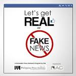

RECOMMENDATIONS
BECOME A RESPONSIBLE INTERNET USER
Social media is the best tool for interacting with people who are far and best for meeting new people but it must be used responsibly.
As an internet what can you do to stop and expose fake news?
- know your source( know exactly who provided the information for the reports you’re reading)
- compare multiple reports to find the facts
- Don’t just share stories based on headlines
- Avoid hyperbole
- Consider the angle
- Check pictures using Google image search
- If your tweet is debunked, delete and correct
- Think before you RT or share
If people would become responsible internet and social media users the level of spreading fake news will decrease
,the study or research shows that people are the ones who are responsible for sharing fake news than bots.
This is what you have to do before sharing anything

let us say no to fake news
What else can be done to stop fake news
What can be done to stop fake news?
In order to maintain an open democratic system, it is important that government, businesses and consumers work together to solve these problems.
- Government should promote news literacy and strong professional journalism in their societies.
- The news industry must provide high-quality journalism in order to build public trust and correct fake news and disinformation without legitimizing them.
- Technology companies should invest in tools that identify fake news, reduce financial incentives for those who profit from disinformation, and improve online accountability.
- Educational institutions should make informing people about news literacy a high priority.
- Finally, individuals should follow a diversity of news source, and sceptical of what they read and watch
go back social media
To home page Home page
Protecting yourself from fake news prev